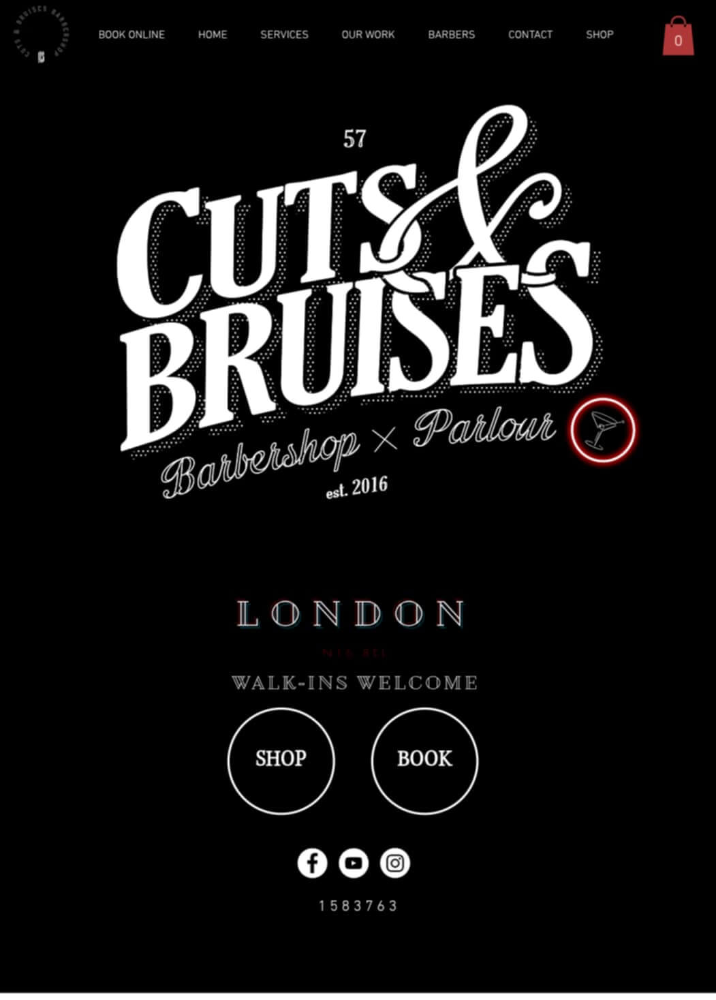

Visual Hierarchy
Cuts and Bruises Barbershop
cutsandbruisesbarbershop.com This website shows Visual Hierarchy by using different sizes in the heading to guide the readers eyes on where to go and what to read next.
PARC: Repetition
Big Commerce
bigcommerce.comThis site shows the design principle of repetition through its use of color. The royal blue is repeated throughout the different elements but especially as a call of action box.
White Space and Clean Design
Wealth Simple
healthsimple.comThis website uses the principle of white space effictively in its simple design. The page isn't full of elements, but itstead it has minimal elements, with plenty of white space for the eyes to rest.